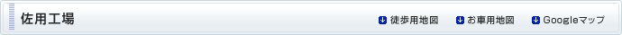
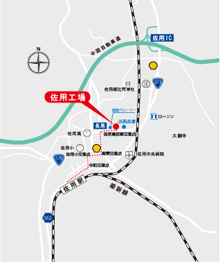
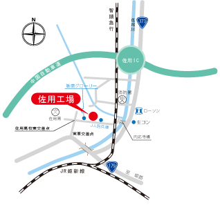

〒679-5305兵庫県佐用郡佐用町長尾字清水の元925番地 TEL 050-7102-9782 FAX 0790-82-0145

〒679-5305兵庫県佐用郡佐用町長尾字清水の元925番地TEL 050-7102-9782 FAX 0790-82-0145
■高速道利用の場合 中国自動車道佐用インターを出て右折し約1.7km 佐用川沿いを走行し円応寺橋を右折約300m ■一般道利用の場合 姫路方面より １７９号線上町交差点を直進し200ｍ走行 実栗交差点を右折し150m、佐用高校東交差点を右折350m
詳細の広域を見たい方はGoogleマップをご利用ください。